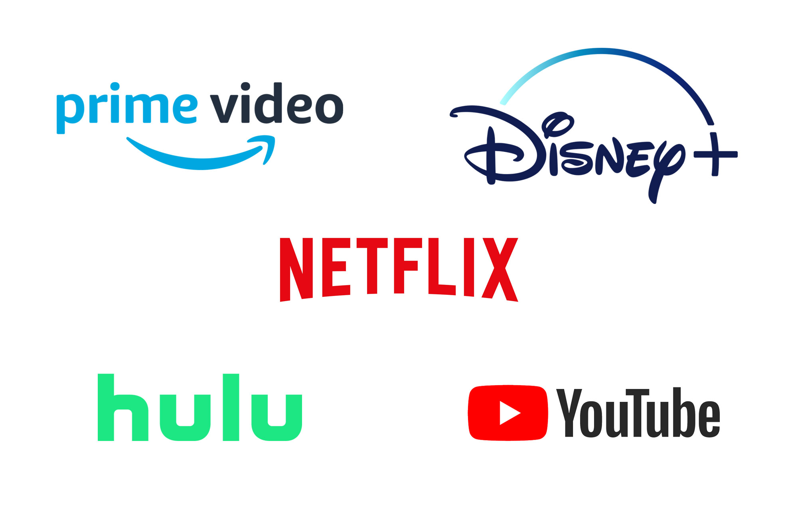
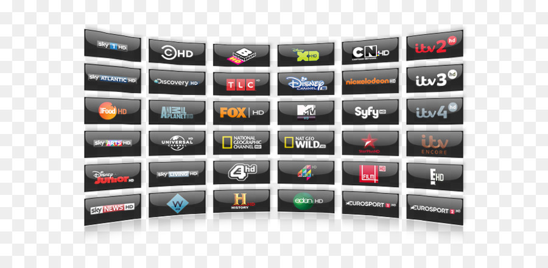

las mejores series de mi 2021 este top es mio y al final es mi opinion 27/11/2022 mejores series top de mi opinion trailer de cyberpunk edge runners cyberpunk edge runners rick and morty kommi san smiling frends brooklyn 99 vinlad saga la vida del rey inmortal megalobox final space saki.k  Unas cuantas series que pueden estar o servicios de streaming en la que pueden ser vistas